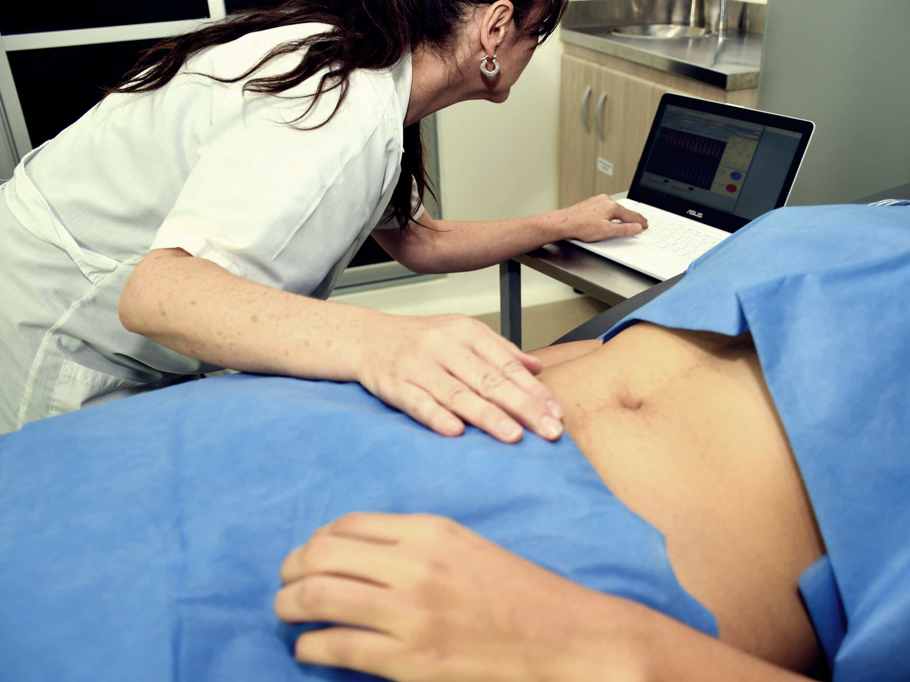

PHmetría 24hrs
Es un procedimiento en el cual se diagnóstica el Reflujo Gastroesofágico mediante una sonda que se introduce por la nariz y llega al esófago. Este examen permite identificar cuándo y durante cuánto tiempo de 24 horas el ácido estomacal se encuentra en esta zona.
Test de aire espirado (lactulosa, lactosa y fructosa)
Es un procedimiento no invasivo el cual permite diagnosticar sobrecrecimiento bacteriano o malabsorción de lactosa y fructosa. El examen de aire espirado consiste en la medición seriada del hidrógeno eliminado a través de su respiración. La prueba dura 3 horas desde el comienzo de su medición.
¿Debo realizar algún cambio en mi vida diaria durante las 24 horas del examen de phmetría?
¿Qué es el reflujo gastroesofágico?
¿Qué recomendaciones hay para el reflujo gastroesofágico?
¿Qué es el sobrecrecimiento bacteriano?
¿En qué consiste el examen del Test de Aire Espirado?
¿Hay indicaciones para el test de aire?